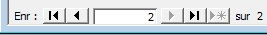
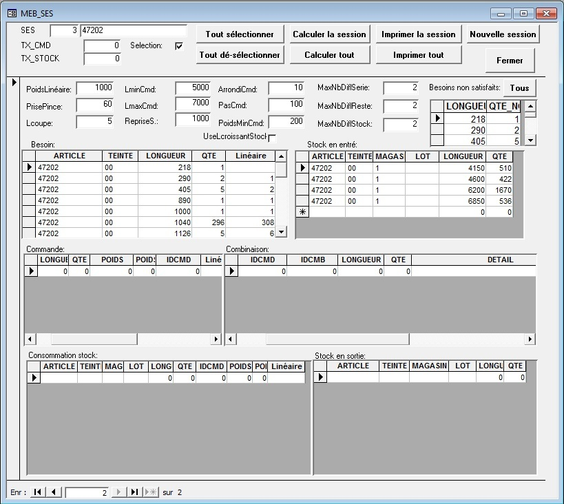
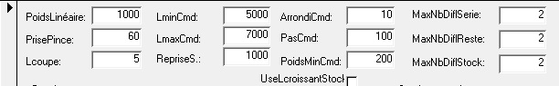
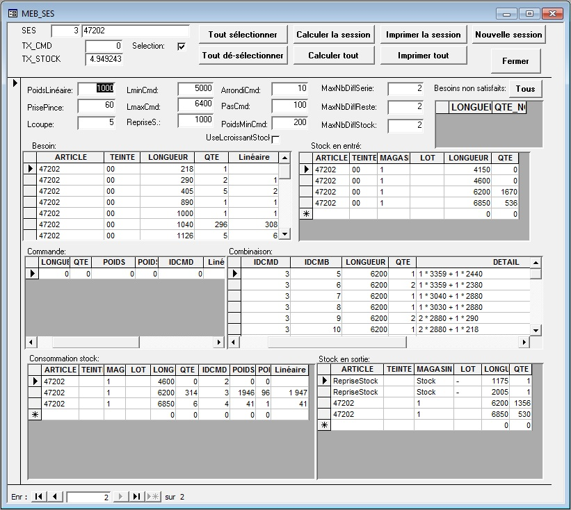

|

 Cette
opération est obligatoire pour l'édition des OF Cette
opération est obligatoire pour l'édition des OF
L'opération de mise en
barre consiste à optimiser l'utilisation des barres à débiter. Calculer une mise en barre
- Depuis l'écran de Liste OF, cliquer sur le
bouton
 . .
- Le N° Lancement et la liste des profilés à débiter
s'affichent.
- Contrôler avec la mise en barre de réservation
si une longueur de profilés à été définie pour la ou les pièces
à débiter. Si nécessaire, forcer à zéro dans la zone stock en
entrée les longueurs à ne pas utiliser.
- Cliquer sur
 ou ou  pour lancer la mise en barre de l'article courant ou des tous les
articles.
pour lancer la mise en barre de l'article courant ou des tous les
articles.
- GENI lance automatiquement l'application de calcul des mises en
barre développée sous Microsoft Access
- Cliquer sur Import GENI
- Se positionner sur la session active
- Vérifier, ajuster si nécessaire: les paramètres de calcul,
le stock en entrée.
- Cliquer sur calculer tout
astuce : pour accélérer le rafraîchissement de
l'affichage, changez de session et revenez.
- Access affiche les besoins non satisfaits par session >
Vérifier et résoudre les causes des besoins non satisfaits (généralement
la borne de longueur de barre mini ). Lancer un recalcul pour
la session
- Examinez le résultat du calcul : Commande, Consommation
stocks, Stock en Sortie et les combinaisons proposées.
Si le résultat ne convient par, modifiee les paramètres et
relancer un calcul.
- Si le résultat vous semble satisfaisant, cliquer sur Fermer
- Si aucun message d'erreur n'apparaît, cliquer sur Export
GENI, puis Quitter
- Les résultats ainsi que les paramètres du calcul effectué sous Access sont repris par
GENI
et affichés à l'écran.
- Dans la zone résultat, il est possible de modifier l'article
utilisé - autre teinte ou article générique.
Il ne faut pas choisir un article dont la longueur est différente de
la longueur affichée.
- Cliquer sur
 pour enregistrer la mise en barre
pour enregistrer la mise en barre
- Cliquer sur
 pour l'éditer.
pour l'éditer.
En images....
Le logiciel AMEB (pour les mises en barres)

Cliquer sur Importer GENI
Se positionner sur la session a calculer. 

Ajuster les paramètres si nécessaire (l'affichage ci-dessous est
un exemple)
 PrisePince
= 60 PrisePince
= 60
Lcoupe : pour une coupe droite : 5, pour une coupe d'onglet 20

Ajuster le stock en entrée en accord avec la réservation (cas ou la matière est en encours d'achat)
TOUJOURS saisir le quantitatif de la réservation
initiale
Cliquer sur Calculer la session ou Calculer tout.
Forcer le rafraîchissement
en changeant de session et en revenant.

Examinez le résultat du calcul : Commande, Consommation stocks, Stock
en Sortie et les combinaisons proposées.
Si le résultat vous convient pour toutes les sessions Cliquer sur Fermer
si non, ajuster les paramètres et relancez un calcul.
Cliquer sur Export GENI, puis Quitter
 Documentation du logiciel ameb
Documentation du logiciel ameb
Identification des zones :
|
Champ |
Description |
|
Lancement N |
Numéro de lancement |
| Chantier |
Code chantier |
| BESOINS |
|
| Site |
Code
site |
| Générique |
Code article
générique |
| Teinte |
Code
teinte |
| Enregistrer |
Case à
cocher (0 : , 1 : ) |
| Linéaire |
Quantité |
| N° MEB |
numéro de la
mise en barre |
| O.F. |
Numéro d'Ordre
de Fabrication |
| Etat |
Valide, Besoins, |
| Tx chute cde |
Taux de
chute calculé sur les articles commandés |
| Tx chute stock |
Taux
de chute calculé sur les articles du stock |
| Calc |
|
| Modifier |
Case
à cocher (0 : , 1 :) |
| Détail
besoin |
Liste
des articles devant être fabriqués |
| Long |
Longueur |
| Qté |
Qté
dans la longueur définie |
| Stock en
entrée |
|
| Site |
Code
site |
| Long. |
Longueur
de profilé |
| Qté |
Quantité
d'articles en stock à terme -> Affecté + Indivi - Ancien besoin |
| Ancien besoin |
Quantité
restante en besoin |
| Affecté |
Quantité
affectée pour répondre au besoin |
| N° Lot |
Numéro
du lot |
| Indivi |
Quantité
en stock indivi > disponible pour tout chantier |
| Besoins
non satisfaits |
Listes
des articles n'ayant pu être traités lors du calcul de mise en
barre. |
| Reprise
Stock |
Liste
des barres en stock pouvant être utilisées |
| RESULTATS |
|
| Variable |
Paramètres
devant être respectés lors du calcul de la mise en barre. ( nombre
de morceaux mini dans une barre, longueur mini des barres reprises
de stock, etc...) |
| Valeur |
| Liste
des variables |
| LCOUPE |
Largeur de coupe (lame de
la scie) |
| REPRISESTOCK |
Longueur mini des barres
reprises en stock |
| PASCMD |
Ecart mini de longueur
entre deux profilés |
| LMINCMD |
Longueur mini des barres
pouvant être commandées |
| LMAXCMD |
Longueur maxi des barres
pouvant être commandées |
| ARRONDICMD |
Arrondi à utiliser pour
les longueurs commandées |
| MAXNBDIFSTOCK |
Nb
maxi de morceaux de longueurs différentes dans une barre!. (STOCK =
Barres en provenance du stock, SERIE = Barres commandées; RESTE =
Restes de barres utilisées en provenance initiale du stock ou de la
série.) |
| MAXNVDIFSERIE |
| MAXNBDIFRESTE |
| MAXICHUTEBARRESERIE |
Taux maxi autorisé en
chute |
| PRISEPINCE |
Longueur perdue par la
prise de pinces |
| USEL CROISSANTSTOCK |
( valeur : 0
ou 1), Utiliser les plus petites longueurs en priorité. |
| POIDSLINEAIRE |
Poids du matériaux en
grammes par
mètre linéaire. (1000 = 1kg) |
| POIDSMINCMD |
Poids mini autorisant la
création d'une nouvelle longueur de barre. |
| Touches
de fonction |
|
Lancer MEB ligne courante |
|
Lancer TOUTES les MEB |
 |
Récup ressources du stock |
 |
Redéfinir MEB auto |
 |
MEB Manuelle |
|
Modif MEB pour recalcul |
|
Enregistrer la MEB courante |
 |
Editer la MEB courante |
|
Editer toues les MEB |
|